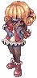

File list
Jump to navigation
Jump to search
This special page shows all uploaded files.
{kind=link}
{kind=link}
| Date | Name | Thumbnail | Size | User | Description | Versions |
|---|---|---|---|---|---|---|
| 15:54, 8 March 2019 | 1503.gif (file) |  |
23 KB | Alice | 1 | |
| 20:49, 7 May 2019 | 15000.png (file) |  |
11 KB | Panic | 1 | |
| 00:52, 22 November 2018 | 1500.gif (file) |  |
20 KB | AloeLeaflet | 1 | |
| 08:18, 18 October 2016 | 1498.png (file) |  |
6 KB | Halves | 1 | |
| 11:23, 15 April 2016 | 1472.png (file) | 371 bytes | Mayo | 1 | ||
| 08:18, 18 October 2016 | 1443.png (file) |  |
5 KB | Halves | 1 | |
| 21:35, 20 March 2017 | 1418.gif (file) | 31 KB | AloeLeaflet | 1 | ||
| 12:21, 23 November 2018 | 1417.gif (file) |  |
8 KB | AloeLeaflet | 1 | |
| 21:14, 20 March 2017 | 1416.gif (file) |  |
65 KB | AloeLeaflet | 1 | |
| 12:21, 23 November 2018 | 1410.gif (file) |  |
25 KB | AloeLeaflet | 1 | |
| 16:32, 2 October 2018 | 1404.gif (file) |  |
17 KB | AloeLeaflet | 1 | |
| 15:54, 8 March 2019 | 1390.gif (file) |  | 6 KB | Alice | 1 | |
| 15:49, 8 March 2019 | 1385.gif (file) |  |
4 KB | Alice | 1 | |
| 16:58, 2 October 2018 | 1382.gif (file) |  |
2 KB | AloeLeaflet | 1 | |
| 15:49, 8 March 2019 | 1379.gif (file) |  |
11 KB | Alice | 1 | |
| 16:30, 2 October 2018 | 1374.gif (file) |  |
22 KB | AloeLeaflet | 1 | |
| 12:20, 23 November 2018 | 1372.gif (file) |  |
19 KB | AloeLeaflet | 1 | |
| 10:43, 11 October 2019 | 1371.gif (file) | 3 KB | Alice | 1 | ||
| 12:56, 23 November 2018 | 1370.gif (file) |  |
17 KB | AloeLeaflet | 1 | |
| 12:54, 23 November 2018 | 1369.gif (file) |  |
7 KB | AloeLeaflet | 1 | |
| 00:52, 22 November 2018 | 1368.gif (file) |  |
5 KB | AloeLeaflet | 1 | |
| 15:49, 8 March 2019 | 1367.gif (file) |  |
4 KB | Alice | 1 | |
| 00:21, 10 November 2019 | 13462.png (file) | 13 KB | I Know To Write | 1 | ||
| 00:22, 10 November 2019 | 13461.png (file) |  |
11 KB | I Know To Write | 1 | |
| 00:21, 10 November 2019 | 13460.png (file) |  |
8 KB | I Know To Write | 1 | |
| 08:19, 18 October 2016 | 13454.png (file) |  |
9 KB | Halves | 1 | |
| 08:18, 18 October 2016 | 13327.png (file) | 14 KB | Halves | 1 | ||
| 07:06, 27 January 2017 | 13323 infinity shuriken.png (file) | 9 KB | Renata | 1 | ||
| 15:21, 6 March 2019 | 1319.gif (file) |  |
5 KB | Alice | 1 | |
| 15:21, 6 March 2019 | 1318.gif (file) | 4 KB | Alice | 1 | ||
| 22:07, 23 November 2018 | 1317.gif (file) | 8 KB | AloeLeaflet | 1 | ||
| 15:21, 6 March 2019 | 1316.gif (file) |  |
6 KB | Alice | 1 | |
| 08:19, 18 October 2016 | 13127.png (file) |  |
11 KB | Halves | 1 | |
| 07:06, 27 January 2017 | 13126 infinity pistol.png (file) | 7 KB | Renata | 1 | ||
| 21:24, 20 March 2017 | 1311.gif (file) |  |
4 KB | AloeLeaflet | 1 | |
| 10:43, 11 October 2019 | 1310.gif (file) |  |
30 KB | Alice | 1 | |
| 00:54, 12 April 2016 | 13094 ES Stabber Dagger HQ.png (file) | 5 KB | Renata | 1 | ||
| 03:52, 6 April 2016 | 13094 ES Stabber Dagger.png (file) |  |
307 bytes | Renata | 1 | |
| 19:48, 11 January 2016 | 1291.png (file) | 507 bytes | Tokeiburu | 1 | ||
| 21:18, 20 March 2017 | 1273.gif (file) |  |
10 KB | AloeLeaflet | 1 | |
| 21:39, 20 March 2017 | 1272.gif (file) | 27 KB | AloeLeaflet | 1 | ||
| 09:33, 3 July 2016 | 12350.png (file) | 8 KB | Lunch | 1 | ||
| 11:24, 15 April 2016 | 1228.png (file) | 339 bytes | Mayo | 1 | ||
| 09:33, 3 July 2016 | 12260.png (file) | 10 KB | Lunch | 1 | ||
| 11:23, 15 April 2016 | 1223.png (file) | 357 bytes | Mayo | 1 | ||
| 16:04, 11 February 2016 | 12205.png (file) | 414 bytes | Mayo | 1 | ||
| 17:54, 14 April 2016 | 12204.png (file) | 482 bytes | Mayo | 2 | ||
| 17:05, 2 October 2018 | 1214.gif (file) |  |
1 KB | AloeLeaflet | 1 | |
| 16:46, 2 October 2018 | 1213.gif (file) |  |
14 KB | AloeLeaflet | 1 | |
| 18:28, 8 October 2018 | 12040.png (file) | 414 bytes | AloeLeaflet | 1 |
{kind=link}
{kind=link}
{kind=link}
{kind=link}
{kind=link}
{kind=link}
{kind=link}